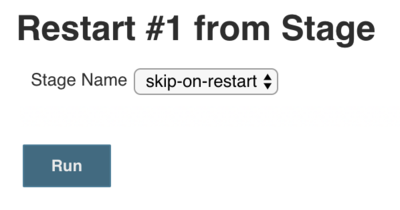

Running Pipelines
Table of Contents
Running a Pipeline
Multibranch
See the Multibranch documentation for more information.
Parameters
See the Jenkinsfile documentation for more information
Restarting or Rerunning a Pipeline
There are a number of ways to rerun or restart a completed Pipeline.
Replay
See the Replay documentation for more information.
Restart from a Stage
You can restart any completed Declarative Pipeline from any
top-level stage which ran in that Pipeline. This allows you to rerun a Pipeline from a stage which failed due to
transient or environmental considerations, for example. All inputs to the Pipeline will be the same. This includes
SCM information, build parameters, and the contents of any stash step calls in the original Pipeline, if specified.
How to Use
No additional configuration is needed in the Jenkinsfile to allow you to restart stages in your Declarative Pipelines. This is an inherent part of Declarative Pipelines and is available automatically.
Restarting from the Classic UI
Once your Pipeline has completed, whether it succeeds or fails, you can go to the side panel for the run in the classic UI and click on "Restart from Stage".
You will be prompted to choose from a list of top-level stages that were executed in the original run, in the order
they were executed. Stages which were skipped due to an earlier failure will not be available to be restarted, but
stages which were skipped due to a when condition not being satisfied will be available. The parent stage for a
group of parallel stages, or a group of nested stages to be run sequentially will also not be available - only
top-level stages are allowed.

Once you choose a stage to restart from and click submit, a new build, with a new build number, will be started. All stages before the selected stage will be skipped, and the Pipeline will start executing at the selected stage. From that point on, the Pipeline will run as normal.

Preserving `stash`es for Use with Restarted Stages
Normally, when you run the stash step in your Pipeline, the resulting stash of artifacts is cleared when the
Pipeline completes, regardless of the result of the Pipeline. Since stash artifacts aren’t accessible outside of the
Pipeline run that created them, this has not created any limitations on usage. But with Declarative stage restarting,
you may want to be able to unstash artifacts from a stage which ran before the stage you’re restarting from.
To enable this, there is a job property that allows you to configure a maximum number of completed runs whose
stash artifacts should be preserved for reuse in a restarted run. You can specify anywhere from 1 to 50 as the
number of runs to preserve.
This job property can be configured in your Declarative Pipeline’s options section, as below:
options {
preserveStashes() (1)
// or
preserveStashes(buildCount: 5) (2)
}| 1 | The default number of runs to preserve is 1, just the most recent completed build. |
| 2 | If a number for buildCount outside of the range of 1 to 50 is specified, the Pipeline will fail with a
validation error. |
When a Pipeline completes, it will check to see if any previously completed runs should have their stash artifacts
cleared.
Please submit your feedback about this page through this quick form.
Alternatively, if you don't wish to complete the quick form, you can simply indicate if you found this page helpful?
See existing feedback here.